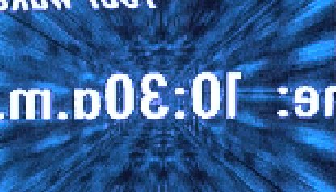

History of Cyberpunk
Intro
...The free human mind, creating the future, brings us to the new age - the Cyber Age. The inventing of the electricity and the telephone marks the beginning of the rise of the mankind. Broadcasting of sounds and images changed the human life forever...
With every new invention, the world - a child of the new age - was growing. Mankind saw millions of new opportunities. The Computer was the biggest invention of the human race ever made after the discovery of electricity. This invention of the seething intelligence became the most used one in daily life... This new invention opened a door to a new dimension - the cyberworlds also known as Virtual Reality. The computer-synthesized worlds were the brand new technology, taking more and more victims... After those events the world could never be the same again...
The new age was begot the first crime to the electronic world. The Cyber Age brought us more violence and more hatred in human's souls, more pain and more suffering... The crimes were moving to the new world, the world of 1's and 0's... New communities rose from the data world. Hackers, FreeJacks and Phreakers were the new rulers of this world. They brought the chaos into the new creation, but they also brought the knowledge to the mass, too. The Cyberpunks - offspring of the Cyber Age become the culture of the new world. The small community of free thinking people began to grow up and attract more and more people to the new cause - The Information is power ! Free the Information !... The new world was called "Cyberspace" by an member of the new society... The Cyberspace become a home for the Cyberpunks and the whole Cyber Underground. Hackers, Phreakers and other Cyberpunks began to rule the new world the way they like - No laws ! No rules !
They began the new creation...
Creating a new dimension, creating the Cyberspace...
-- Mad Maniac, 1996
Documents
- Cyber + Punk = Cyberpunk
- Coining of the word "cyberpunk", fusion of "cyber" and "punk".
- Cyberpunk Timeline
- Year by year history of cyber, punk and cyberpunk.
- The Etymology of Cyberpunk
- In foreword to Cyberpunk, Bruce Bethke himself tells how, when, and why he invented the term cyberpunk.
- Cyberpunk R.I.P.
- An Wired Magazine article about death of the cyberpunk movement.
- Is Cyberpunk Dead ?
- For the last years, it has been trendy to say that cyberpunk is dead. How about this ?
- Cyberpunk Lives !
- Orwell via Huxley
History of Cyberpunk Science Fiction
These papers tell about cyberpunk history, from pre-cyberpunk science fiction to '80s cyberpunk, and to cyberpunk nowadays.
- Eighties Cyberpunk
- Cyberpunk, a new form of science fiction written by a group of five writers. An essay about the early years by Barbara Lisele Zavala.
- After the Deluge : Cyberpunk in the '80s and '90s
- Cyberpunk in the Nineties
- The Movement in America
- Notes Toward a Postcyberpunk Manifesto
- An essay by Lawrence Person. Discusses exactly why original cyberpunk works like Neuromancer were important, and why the work people like Stephenson, Sterling, Egan, Macleod, etc. are doing right now should more properly be thought of as postcyberpunk.
Cyberpunk Subculture : Past and Present
These papers recount the evolution and history of cyberpunk as a cultural theme. They place the cyberpunk culture in an historical context.
- Fiction That Bleeds Truth
- Cyberpunk - From Subculture to Mainstream
- From subcultures of the 60s and 70s to cyberpunk.
- Cyberpunk - Terminal Chic ?
- Article by Nathan Cobb, from the Boston Globe, about cyberpunk culture, specifically the differences between hackers and punks, how the two cultures merged, and the resulting cyberculture.
- Is Cyberpunk the Counterculture of the 1990's ?
- An article examining the cyberpunk phenomenon and analyzing the appropriateness of assigning the "counterculture" label to cyberpunks.
- Slacker's Manifesto
- Talkin 'Bout My Generation
- Ruminations and convolutions on the substance of Cyberpunk
- Dr. Odd's ruminations and convolutions on the substance of Cyberpunk, its future, and its relationship to modern culture. From e-zine Screamsheet.
- Down Among the Cyberpunks